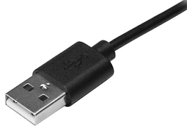
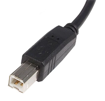
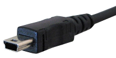
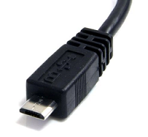
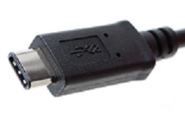
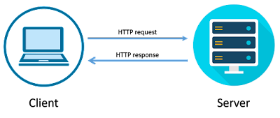
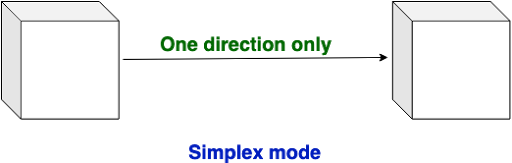
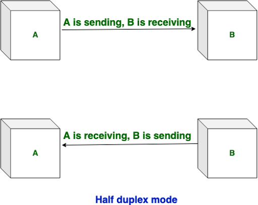
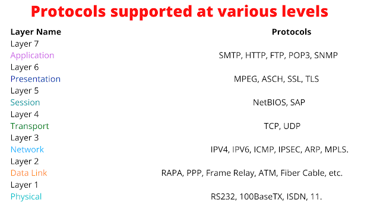

SPECIAL SYMBOLS
Special Symbols on Keyboard, May 19, 2022
There are 34 types of special symbols on the keyboard as below with their Unicode. Unicode: an international encoding standard for use with different languages and scripts, by which each letter, digit, or symbol is assigned a unique numeric value that applies across different platforms and programs.
| Special Symbols | Name |
|---|---|
| ! | Exclamation Mark |
| "" | Double Quote |
| # | A number Sign(Hash) |
| # | A number Sign(Hash) |
| $ | Dollar Sign |
| % | Percent |
| & | Ampersand |
| ' | Single Quote |
| () | Parenthesis |
| * | Asterisk |
| + | Plus |
| , | Comma |
| - | Minus |
| . | Full Stop |
| / | Forward Slash |
| \ | backward Slash |
| : | Colon |
| ; | Semi Colon |
| < | Less Than |
| > | Greater Than |
| = | Equal Sign |
| A number Sign(Hash) | |
| ? | Question Mark |
| @ | At Sign(at the rate) |
| [] | Bracket |
| ^ | Caret |
| _ | Underscore |
| ` | Grave Accent(backtick) |
| {} | Curly Brace |
| | | Vertical Bar(Pipe) |
| ~ | Tilde |
USB CABLES
TYPES OF USB (UNIVERSAL SERIAL BUS) CABLES, May 20, 2022
1. USB-A: It is most commonly used with computers or power outlets. When charging, you will connect the USB-A side into the USB plug or into a laptop or computer.
2. USB-B: It is ports are mostly used to connect printers or external hard drives with computers. They are not as common as the other types of USB cables.
3. USB-Mini: It was used for connecting mobile devices including MP3 players and cameras, and is a much smaller connection, thus allowing smaller devices to connect.
4. Micro-USB: It is used to be the most common USB port and is still found on many older models. This type of connection allows data to be read without needing a computer. For example, you can connect Flash Drives, or Memory Sticks, directly to your mobile device.
5. USB-C: It is the most recent USB development and all new Samsung devices come with USB-C ports. USB-C cables allow high-speed data transfers and a higher power flow, allowing your phone to charge more quickly. USB-C cables are also reversible and can be plugged in either way round.
6. USB 3: It was designed to be able to be backwards compatible with earlier versions of USB cables and ports. The USB 3 has different shaped connector pins so it can withstand more frequent use. The USB 3-A and USB 3-B cables are identical to the USB-A and USB-B cables at the top of this article, except they are colored blue inside to distinguish them. The USB 3 micro cable has extra pins to enable the transference of more data.
What is Internet?
Internet: Interconnected/International Network, May 21, 2022
Network: When two or more computers are connected with wired and wireless and share their resources(in the form of Images, Videos, etc) it is called a Network.
* The real meaning of Network/Internet is "Sharing".
->Few important Point
- The Network is created by the Fiber Optic Cable across the world.
- Through these cables transfer data from one end to another at almost the speed of light. (The speed of light approx 3 lakh Kilometer/second).
- Internet is a worldwide global system of interconnected computer networks.
- Internet uses the standard Internet Protocol (TCP/IP).
- Every computer on the internet is identified by a unique IP address.
- IP Address is a unique set of numbers (such as 192.168.1.1) that identifies a computer location.
- A special computer DNS (Domain Name Server) is used to give a name to the IP Address so that the user can locate a computer by a name.
- For example, a DNS server will resolve a name www.lovecomputer.co.in to a particular IP address to uniquely identify the computer on which this website is hosted.
- Internet is accessible to every user all over the world.
Diagram of Internet: how the Internet works
There are three types of Networks:
1. Internet: The network formed by the cooperative interconnection of millions of computers, linked together is called the Internet.
2. Intranet: It is an internal private network built within an organization using the Internet and World Wide Web standards and products that allow employees of an organization to gain access to corporate information.
3. Extranet: It is the type of network that allows users from outside to access the Intranet of an organization.
There are three types of data communications mode in a network:-
1. Simplex Mode: In simplex mode data only go to one way. Example: Radio, Television (इस तरीके में जानकारी सिर्फ एक ही तरफ़ जाती है)
2. Half Duplex Mode: In Half Duplex mode sender can send the data and also can receive the data but one at a time. It is two-way directional communication but one at a time. Example: Walkie- talkie, physical example: Post office (इस तरीके में जानकारी एक समय में एक ही तरफ से दूसरी तरफ जाती है)
3. Full Duplex Mode: In Full Duplex mode, Sender can send the data and also can receive the data simultaneously. It is two-way directional communication simultaneously. Example: Mobile, landline Phone. physical example: face to face (इस तरीके में जानकारी एक ही समय में एक तरफ से दूसरे और दूसरी तरफ से पहली तरफ जा सकती है)
Protocol (नियम):
There are many rules in the Internet network system like any other system through which it runs smoothly and makes this system good and fair.
This network works on OSI(open system interconnect) Model.
-Thank You-
About Me
This Blog has a motive to spread the Computer related information.